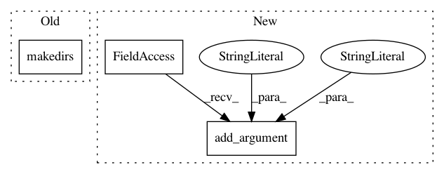

caf3b04b27c0654af3594f0f5ad956f368229c8f,dashboard/agent.py,,,#,177
Before Change
temp_dir = "/" + args.temp_dir.strip("/")
else:
temp_dir = "/tmp/ray"
os.makedirs(temp_dir, exist_ok=True)
if args.log_dir:
log_dir = args.log_dir
else:
After Change
required=True,
type=int,
help="The port to expose metrics through Prometheus.")
parser.add_argument(
"--dashboard-agent-port",
required=True,
type=int,
help="The port on which the dashboard agent will receive GRPCs.")
parser.add_argument(
"--node-manager-port",
required=True,
type=int,
In pattern: SUPERPATTERN
Frequency: 3
Non-data size: 3
Instances
Project Name: ray-project/ray
Commit Name: caf3b04b27c0654af3594f0f5ad956f368229c8f
Time: 2020-10-23
Author: maxfitton@anyscale.com
File Name: dashboard/agent.py
Class Name:
Method Name:
Project Name: tristandeleu/pytorch-maml-rl
Commit Name: efd31f17f6753ee92ef1038016bd9470f25867d1
Time: 2019-12-08
Author: tristan.deleu@gmail.com
File Name: train.py
Class Name:
Method Name:
Project Name: dmlc/gluon-cv
Commit Name: 484557c74b93a91de2db1d12dc23c39a7cebc5fc
Time: 2018-04-20
Author: ubuntu@ip-172-31-6-226.us-west-2.compute.internal
File Name: scripts/classification/imagenet/train_imagenet.py
Class Name:
Method Name: